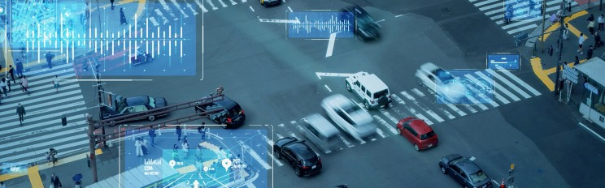
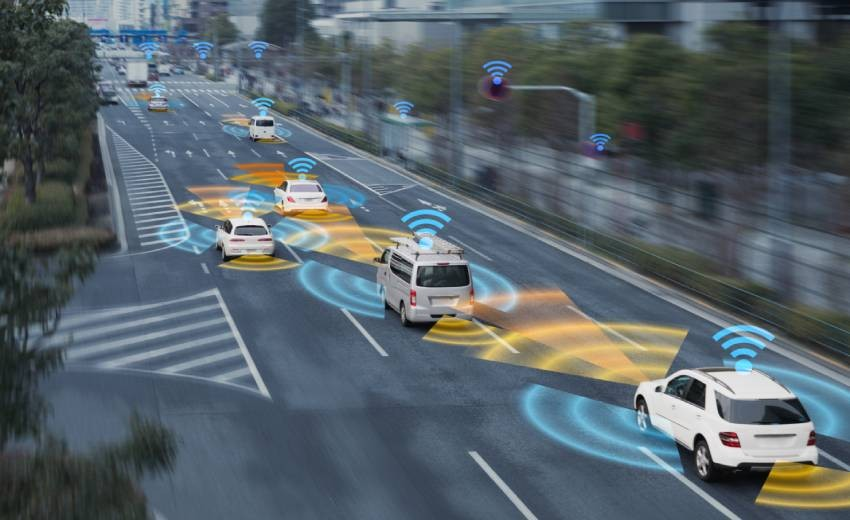

Introduction
Vehicle-Road-Cloud Integration (VRC) is a groundbreaking concept that aims to revolutionize transportation systems. By seamlessly connecting vehicles, roads, and cloud-based infrastructure, VRC enables enhanced safety, efficiency, and sustainability. This article explores the principles, components, and potential benefits of VRC.
Understanding VRC
VRC is an information-physical system that utilizes advanced technologies to integrate the physical, information, and application layers of vehicles, roads, and the cloud. It enables integrated perception, decision-making, and control, leading to significant improvements in transportation operations.
Key Components of VRC
- Computing Basic Platform: Evolved from traditional electronic control units (ECUs), this platform provides computational power for processing data and executing algorithms.
- Cloud Control Basic Platform: Consists of edge, regional, and central clouds, offering real-time and non-real-time services for various applications.
- Related Support Platforms: Includes high-precision dynamic maps, ground-based enhanced positioning platforms, meteorological warning platforms, and traffic network monitoring platforms.
- Information Security Basic Platform: Ensures the security and privacy of data transmitted and processed within the VRC system.
- Smart Terminal Basic Platform: Represents the vehicles themselves, equipped with sensors, communication modules, and on-board computing capabilities.

Benefits of VRC
- Enhanced Safety: VRC enables real-time communication between vehicles, infrastructure, and the cloud, allowing for early detection of hazards and proactive measures to prevent accidents.
- Improved Efficiency: VRC optimizes traffic flow, reduces congestion, and improves fuel efficiency through coordinated control and intelligent routing.
- Enhanced Driving Experience: VRC provides drivers with valuable information and assistance, such as navigation, traffic updates, and automated driving features.
- Sustainable Transportation: VRC contributes to sustainable transportation by reducing emissions and improving energy efficiency.

Challenges and Future Outlook
While VRC offers immense potential, several challenges need to be addressed:
- Infrastructure Development: The deployment of roadside infrastructure and communication networks is essential for VRC implementation.
- Data Privacy and Security: Ensuring the security and privacy of data collected and transmitted within the VRC system is crucial.
- Standardization: Establishing common standards for communication protocols and data formats is vital for interoperability.
- Cost-Effectiveness: Implementing VRC solutions can be costly and requires careful consideration of economic factors.
Despite these challenges, the future of VRC is promising. As technology advances and costs decrease, VRC is expected to become a cornerstone of intelligent transportation systems, revolutionizing the way we drive and travel.